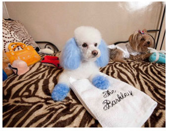

巴西专门开办了一家狗狗情侣酒店
狗狗情侣酒店
据英国《每日电讯报》7月11日报道，巴西是仅次于美国的世界第二大养狗国家，全国共有约3200万条狗。当地一对兄妹从人类的“情侣酒店(love hotel)”中获得灵感，专门开办了一家狗狗情侣酒店，为可爱的宠物狗们提供幽会的场所。
法比亚诺·罗德斯（Fabiano Lourdes）与妹妹丹妮拉（Daniela）在贝洛哈里桑塔市（Belo Horizonte）开办的狗狗情侣酒店将于本周开业。酒店的每个房间每天费用50美元（约合人民币318元），天花板上镶嵌着心形的镜子，地板上铺设了红色垫子，室内灯光昏暗暧昧，为“狗狗情侣”们提供了充分的浪漫气氛。
酒店内还将开设宠物健身中心、狗狗生日会所等，并附带销售一些奢侈的宠物用品，比如标价1000美元（约合人民币6370元）的施华洛世奇水晶狗项圈。法比亚诺称：“对许多人来说，狗就像自己的孩子，必须受到良好对待。我们的市场调查显示，人们总是忙于工作，不知道该将宠物放在哪里交配。”
罗德斯兄妹已经为这家酒店投资了100多万美元（约合人民币637万元），聘请了60名工作人员，包括兽医、生物学家。他们希望酒店每月的收入能超过30万美元（约合人民币191万元）。